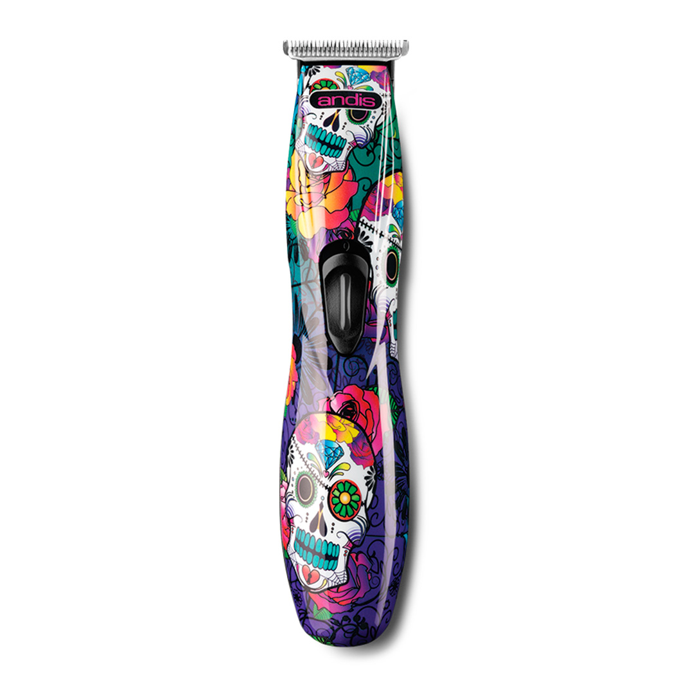

Estas son algunas de las mejores y mas usadas patilleras de los barberos. Las trimmers o patilleras son anatómicas, silenciosas y delgadas. Brindan comodidad y facilidad en el trabajo en zonas más críticas como las orejas, las patillas, el bigote, el cuello y la pera, debido a que son delgadas y gracias a su diseño pueden ser perfiladas en las direcciones que se desee.

Patillera Babylist
Patillera Detailer
Patillera Kemel
Patillera Duga
Patillera Vintage
Patillera Trimmer
Patillera Viggo

Patillera Andis